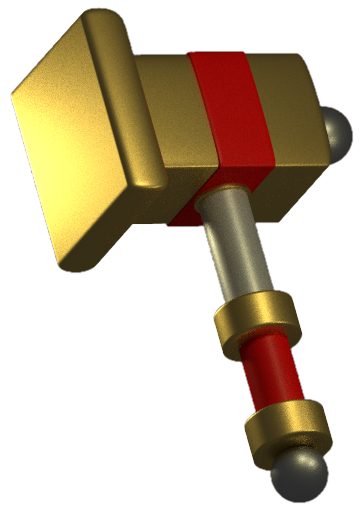
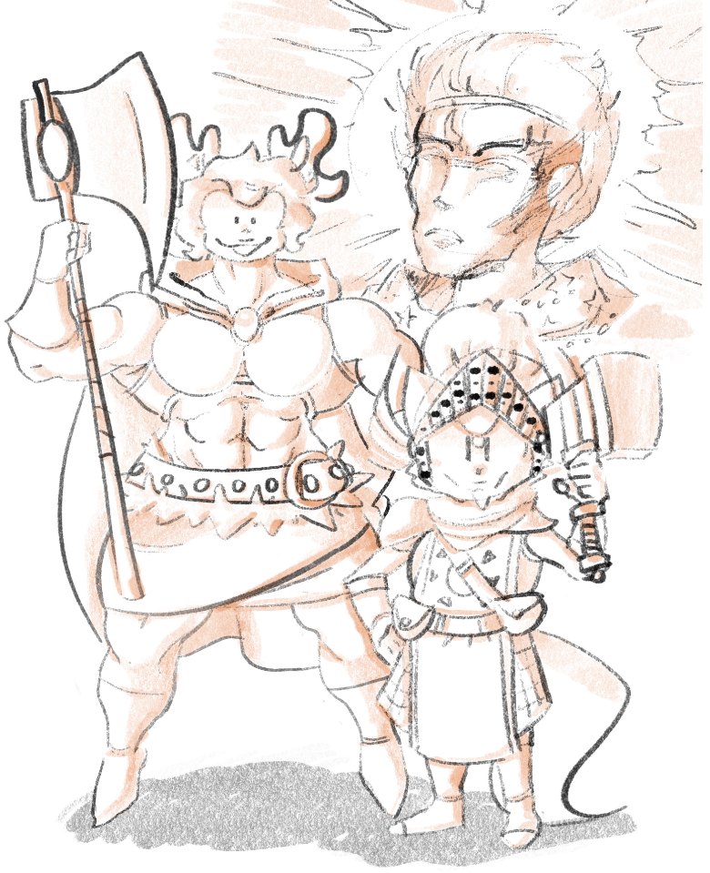
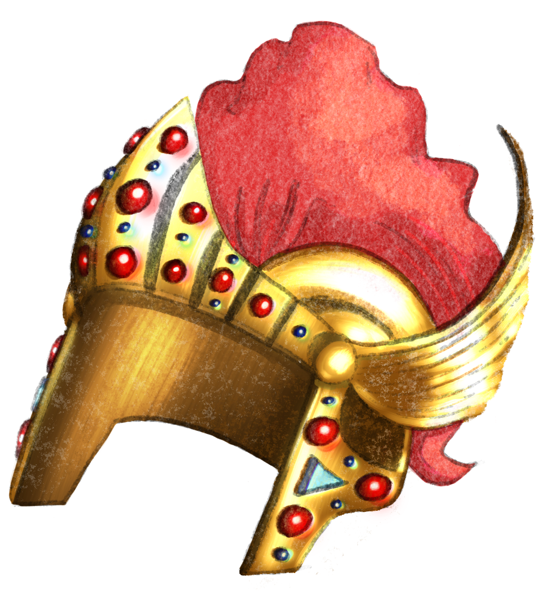
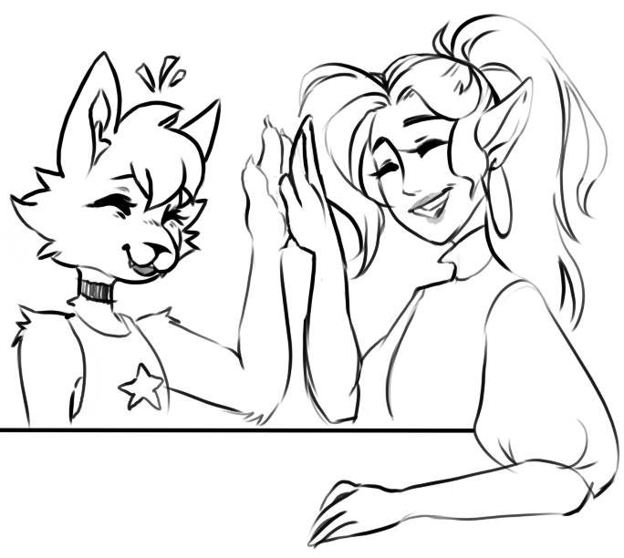

Story
Prologue
While young, Maxi was found stray in the wild by an old Laren, who then took it upon himself to raise him in his cabin in Neverwinter Wood. Laren would tell Maxi that he nor many others have ever seen a creature like him before, and he believed that he was a special gift from the gods - maybe his god Lathander, known for creativity, renewal, and birth - to create someone special. After learning to properly read and write, Maxi would go on to spend most of his time studying Laren's tomes and listening to his tales of going on adventures as a heroic paladin, in hopes of one day following him in his footsteps. However, Laren insisted that Maxi stayed home while he was out gathering these tomes and adventuring, afraid of how others would think of him. Instead, Maxi often found himself studying Laren's equipment and drawing in spare books of himself going on his own adventures, companied by his own magical "smiting hammer".

Maxi's Smiting Hammer
It took time to build up the courage over the years, but Maxi was ready to let Laren know he wanted to go out and see the world for himself. However, he would unfortunately discover that the old man died in his sleep. That's when he would hastily gather his father's equipment and run away from home for the first time in his life to mourn alone into the wilderness nearby. In his dreams that night - expected to be filled with fear and despair - Maxi would instead experience a divine intervention from Lathander himself, who knew Laren well for his great deeds and prayers made throughout the years. Maxi would be told he had a promising life of adventure ahead of him, as he had a lot to learn about Faerun and his father's past. He would awake in the cave where he had since passed out, with the morning light shining down upon him. In his hands, which once clutched onto Laren's beloved mace, now shined a magical hammer that resembled the very weapon featured in his drawings. Maxi would take this gift and vow to seek out more information about his father's legacy and the world he sought to protect.
Lost Mines of Phandelver Saga
levels 1-3
While getting to explore his hometown in person for the first time, a trusty Dwarfven tutor of Laren's would spot and greet the outsider. However, after it was revealed that his old paladin friend had just passed away while secretly hiding Maxi away from the public, he would rush off in a panic to consult his priestly colleagues. Believing that Maxi was potentially the cause of their dear hero's death, the Dwarf would discretely order for a bounty to be put on his head while they investigated further. Fortunately for them, another outsider would make their way through town to take on this job. On his way home that very night just outside of town, Maxi would cross paths with the towering barbarian who was quick to attack. With great pressure put on him, Maxi would unleash the divine fire magic from within him, the fight coming to an abrupt end only when he nearly set the field ablaze. The defeated bounty hunter would then reveal herself as Cera, an amazon who had fled from Icewind Dale during the summer in search for a job while exploring the much warmer Sword Coast. Gaining the respect of each other through this encounter, the two would walk away together as great friends and go on to bond through their need for adventure.

Maxi and his new friend Cera
Nights later, Maxi and Cera would be greeted at the cabin by many of the town's acolytes, apologizing greatly after finding out the trouble their colleague had caused them. After offering to give his father a proper ceremony, Maxi would be presented an opportunity to help another friend of theirs in Neverwinter - a Dwarf who needed his goods escorted to a nearby town - in where he could further explore his magic as his father once had. Cera would watch after his home as he immediately took the job head-on. Unfortunately, only a Tenday later he would return to exclaim that while he made some great friends, such as a bard named Zarad, they ultimately decided he was not experienced enough for what lied ahead. Cera would reassure her friend by suggesting to check out Candlekeep - the library fortress to the south - to learn more about the world and his magical potential before adventuring forth once more, while she would part ways to ultimately continue his quest for him. (See Cera's Page)
Curse of Candlekeep Saga
levels 1-20
A month has passed, and after presenting his background and laying his eyes upon the Emerald Door, Maxi would eventually become part of the Avowed. There he would make friends with Ason, Eli, and Valentina, all of which were also there to seek greater knowledge, and together they would climb up the ranks by taking out tests and favors under their new hag apprentice, Jenny Greenteeth, with promise of one day being able to enter and obtain the information they seeked. They would also meet the mysterious necromancer named Orikson who would keep an eye out on the scholars on their ventures. He had ties to each of their pasts, claiming to be one of the few people still around to have once worked alongside Laren during trying times. Maxi openly admits to looking up to him for this, but Orikson is quick to remind him of his blantly evil nature and that he would eventually know better. From escaping an old sage's puzzling mansion, to putting a stop to a shady merchant's bazaar of magical wares, to even recovering a desecrated sanctuary in Sune's name from evil hags in disguise, Maxi and his corhorts would work their way up to earning the title of Scribe. However, Jenny would reveal their next mission would be their greatest yet most dangerous, involving skipping between different planes to reach the doomed Barovia, and face its unjust ruler, Strahd von Zarovich. Maxi promised his peers that he would return after, powerful enough to help those in need that they had met along the way up to this point.
 Maxi in the robes he wore on the grounds of Candlekeep
Maxi in the robes he wore on the grounds of Candlekeep
It would be a treacherous journey there, with the party meeting many people and creatures along the way, such as a friendly hag that fortold keys events ahead with tarrot cards. There were also priests and other adventurers caught up in the troubles of a mysterious cult of Orcus, but nothing the party couldn't put a stop to. They would eventually enter the mist of the domain, generally unwelcomed by its untrustful people and creatures that lurked in the dark. However, this would slowly change as they would soon gain the trust of Krezk by reviving the burgomaster's son and later proving their power to it's abbot, a fallen celstial in disguise. They would also heal a once dying elder of the Vistani people, challenge an ancient hero's spirit to a duel as to finish its story, and even put what was to be the spirit of Strahd's long lost love to rest. During these ventures, Strahd's loyal servants would intervene but fall before them as they grew in power, catching the attention of their master. The heroes also went to go on to explore the Amber temple, where they would be find many more cultists of Orcus, slaying all that stood in their path now knowing they were a true threat. Strahd would finally begin to show up himself and take the party on, proving to have many different forms that only made him stronger with each defeat.
With the hope that they brought to the land, the party would gain many allies and even items, such as Maxi's Helm of Brillance and Holy Symbol of Ravenkind before the party's showndown with the vampire lord, which would soon come when invited to Castle Ravenloft to have dinner and face what else it had in store. Strahd, now in his last form, awaited them as they explored and evaded his monsters and traps within. It was when the party took a rest where Maxi would doze off and Strahd would strike - believed to use the remaining magic from his previous form to put Maxi in a deep, magical sleep. Nothing could wake him but another divine intervention from Lathander like once before, Maxi being told that he was destined for much more and would be sure to see the day. Maxi would be given the power needed to break the curse and awake, finding himself atop a wyvern with his friends. Apparently enough time had passed that they had managed to defeat Strahd and ultimately lend control to the hags they had since befriended, bringing hope to the land once more and earning the titles of Keeper of Tomes upon returning to Candlekeep. However, the cult of Orcus had plans this whole time to take over the world by summoning their Demonlord, unleashing countless demons and sending Neverwinter into ruins while the party was distracted working on their previous mission, but the heroes were now on their way to make things right.

Maxi's Helm of Brilliance
The party quickly dispatched, flying to each of these gates to slay all the demons in their way to close them off, bringing safety back to the remaining of Neverwinter and returning to Candlekeep to gain more information. They would learn that this was only the beginning, as many of the fortress's sealed artifacts were since stolen in preperation for the cult's regime. They had also since teamed up with other powerful names to bring out these plans, including a lich who threatened to soon unleash a dreadful plague upon the Sword Coast. The party would investigate her grove and ultimately foil her plans in a battle to the death, before realizing her phylactery was no where to be found. They would stumble upon an entrance to the feywild within her lair, which lead them into a luxurious party full of various figures they had been warned about earlier. These included familiar faces such as Orikson, to the leader of the Cult of Orcus himself, besides rulers of alien domains and even avatars of deities, such as that of Auril. However, there seemed to be no direct conflict awaiting them, as the adventurers were surprised to find themselves invited to become familiar with the rest of the guests there before their inevitable doom. They would learn from the party's host, an unfamilar yet all-seeing fey, that the phylactery they seeked took form as one of the fairies they had saved from the lich's grove, which was safe from harm within her realm. Only when Maxi and his friends presented gifts and came to terms with their fate would she then agree to destroy the phylactery and send them back to their fortress's grounds. She even offered gifts to the heroes in return, giving a chance for Maxi to learn about his father's past, but with him reluctantly declined as he ultimately wanted to learn for himself after his adventure was over.
Back at Candlekeep once more, the heroes would find it in a state of even more ruin while away, with many of the Great Readers being murdered or dying trying to protect the fortress grounds. The most vigilant survivor was the Keeper, a shapeshifting dragon who put formalities aside amidst the chaos to consider the heroes the newest members of the counsel, becoming a great ally while they took the places of those who have fallen, making Maxi the Sage of Abjuration. She revealed the cult had since gone into their last phase of their summoning, and after gathering all the spell scrolls they could in preperation, Maxi used divination to learn that there were actually multiple locations that took part in it: Port Nyanzaru of Chult, underneath Cresscreek, and the forge within the Throat of the World. The Keeper and her new friends would split up to take on each location, swiftly travelling across the realm to find and destroy the cult's hidden ritual sites, standing face to face with nearly every different acolyte and entity who they had crossed paths with up to this point to ensure the world's demise. The heroes stood their ground however, fighting off their foes and dispelling their evil magics completely, even if using a great deal of magic of their own. With only the Throat of the World to go, the sages would arrive just too late, finding the surrounding forest had been set ablaze with the air burning with ash as the Demonlord Orcus stepped through to the Material Plane among the leader of the cult and his undead cohorts.
Orcus would see much potential in the heroes and, to their surprise, offer his power to them if they were to join him by his side. They quickly drew their weapons instead and went to battle, facing what would be their most fierce and powerful enemy yet as they unleashed everything they had left to offer. His undead minions proved to be a challenge for even a priest such as Maxi, but were soon enough overwhelmed with the help of the celestials he summoned and his friends' elemental magic. Orcus was on another level of power than anyone that had yet to meet, exposing the heroes' true weaknesses and abusing them with his deadly wand's necromancy and forceful blows as they refused to knell before him. However, with Maxi focusing on shielding his friends and curing their wounds, they stood strong and the sheer force of their remaining magic combined would be too much for the Demonlord to handle, with Orcus being ultimately being obliterated and disappearing for what seemed to be for good. The heroes would catch their breath before coming together to celebrate their triumph, knowing they had just saved the world from total annilhation.
 An angel which Maxi summoned, resembling those found in his drawings
An angel which Maxi summoned, resembling those found in his drawings
Epilogue
Maxi and his friends would use their various magic to seek out and return the majority of the artifacts and other treasure previously stolen from Candlekeep before helping rebuild the fortress and its defenses. Ason reunited with his fiancé in Neverwinter, helping rebuild the city as well before settling down, while Valentia became the new user of the Wand of Orcus and discovered more of her magical potential as a vampire, and Eli went on to study beyond what he had learned to create and grant his own spells. Nevertheless, these friends would continue to serve as the Great Readers of Candlekeep, promoted to the Sages of Transmutation, Necromancy, Conjuration - and for Maxi - Evocation. The events of this journey would be recorded by them, known on that day forward as "the Curse of Candlekeep". Maxi would also finally find the knowledge he seeked of his father Laren, which revealed he was a paladin of a once famous group of adventurers who vowed to put a stop to a similar yet smaller band of cultists who constructed different mighty elementals, threatening to destroy differect sectors of the Sword Coast many decades ago. After making a deal with Orikson to help them seek and destory these evildoers, Laren quietly retired from the adventuring life in hopes of not attracting a similar threat in the future. Maxi would find joy in knowing he did follow in his fathers footsteps after all, but came to the conclusion that he still had much of the world he had yet to explore and was going to put his strength to good use.

Maxi and his best friend Zarad (drawn by Grey)
Maxi would go on to fulfill his past promises, reviving and assuring safety to all the innocent who met an untimely fate during his adventure, whether it be in Candlekeep, Neverwinter, or even Barovia. This included returning to the desecrated temple of Sune from one of his first trials to restore it to its former glory. The temple would ultimately be renovated by him as he made it his own, providing additional services and advertising it as a sanctuary for all who worship a god of the light domain, which made it a popular location among adventurers and commoners alike along the Sword Coast. This would also be when he would acquire tuning forks attuned to the upper planes and the House of Nature, strengthening his connections to his deity as he awaited the day he would be called upon again. Besides all of these achievements, Maxi made sure above all else to return home to Neverwinter Wood as soon as he could to reunite with his best friends, Cera and Zarad, in which they would then live happily ever after together at their new estate, only after leaving a magical shrine behind in Laren's name.
Last session, Feburary 2022
Rest in peace, Grey. May you and Zarad continue to live on in our memories.
 Initial design and appearance, June 2019
Initial design and appearance, June 2019